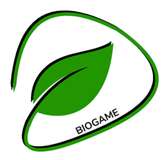

BioGameO BioGame é um aplicativo mobile criado como projeto interdisciplinar para ensinar educação ambiental de um jeito leve e interativo. O jogador encontra uma árvore quase sem vida e, ao longo da jornada, responde a perguntas sobre meio ambiente, plásticos e bioplásticos para trazê-la de volta.
Cada fase começa com uma pequena narrativa e termina com um quiz. Se o jogador erra, a alternativa fica marcada em vermelho, uma folha de vida se perde e ele pode tentar novamente. Se acerta, a resposta fica verde e a fase avança.
Apresentar temas como poluição, plásticos e bioplásticos com textos curtos e situações do dia a dia.
Níveis, fases, vidas e uma árvore que evolui dão ao jogador um motivo visível para continuar.
Adicionar outras contas, comparar níveis no ranking e acompanhar quem está avançando.
O jogo tem 4 níveis, cada um com 4 fases. Ao concluir um nível, a árvore da tela inicial é trocada por uma versão mais viva. Depois dos 16 passos, o nível bônus é liberado e, ao terminá-lo, a árvore dourada lendária aparece na Home.
Primeiro contato com o problema ambiental.
De onde tudo começou.
Alternativas ao plástico comum.
O que cada pessoa pode fazer.
Nível bônus. Aparece na seleção de níveis somente depois de concluir o nível 4.
Fases concluídas ganham um check e as seguintes ficam bloqueadas até serem liberadas.
Cada erro custa uma folha de vida, e é possível tentar de novo até acertar.
A árvore muda a cada nível concluído e vira dourada ao fim do bônus.
Adicione outras contas pelo e-mail e marque um amigo favorito para destaque na árvore.
Você e seus amigos ordenados por nível e pontos, com medalhas para os três primeiros.
Login, cadastro, recuperação de senha, privacidade e suporte, tudo dentro do app.
Somos um grupo de estudantes que uniu tecnologia e educação ambiental em um mesmo projeto. O BioGame nasceu de uma atividade interdisciplinar e cresceu como um jogo completo, com narrativa, design e integração com nuvem.
O BioGame é um projeto interdisciplinar de educação ambiental, feito para o celular.
Integrantes: Aurora Santos Gonçalves, Letícia Anti de Freitas Andrade, Lorena Rodrigues Marinho, Marina Yumi Shinomiya Brugnoli e Maycon Ryan Fontinele de Araújo.